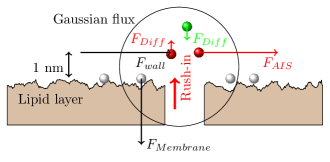

Figure 2.11 shows the forces exerting on ions near the internal surface of the membrane at the exit of an ion channel in the moment next to after that ions rush into the internal segment of the neuron. The white (likely mainly with some ) ions are sitting on the surface and the charges on the opposite side of the membrane () firmly fixes them. They are not ”free charge carriers”: they provide the resting potential. In the previous moment, the ions present in the volume segment are free to move but the resultant force of thermodynamic and electrical forces keeps them in place in a balanced state.
At the beginning of the AP, ions rush into the intracellular segment. The accelerating field across the membrane’s surfaces moves them at the corresponding Stokes-Einstein speed through the ion channel. When they reach the ion channel’s exit, in the absence of the enormous field the ions brake down to the speed corresponding to the local fields in the electrolyte; practically, in a short distance they ”stop”. A large amount (about ) of ions appear suddenly in the layer near to the surface; that is, the charge near the ion channel’s exit port suddenly increases. Since the total electric flux through any closed surface (Gaussian surface) is directly proportional to the enclosed electric charge, the local electric field suddenly increases compared to its environment, so the ions attempt to move along the local gradient. There are constraints, however.
In the direction of the ion channel (where they arrived from) they face an electric field of opposite direction. In the resting state, most of the ions in that local volume are ions. The rushed-in ions suddenly increase the local concentration that practically kicks out the ions which help to block the further ion input. Their appearance has two different effects in the directions perpendicular to and parallel with the membrane’s surface. In the perpendicular direction, relatively small forces move the ions toward the former ’resting state’ (the forces are composed of the local thermodynamic and electrical forces). Given that the fields are low, the speed of the ions is low (much above the diffusion speed, but much below the rush-in speed). Notice that the ions move under the resultant force of the thermodynamic and electrical gradients, so the ions move toward the bulk, the ions toward the membrane. This movement, however, is slow compared to the speed of an AP.

In the horizontal direction, only the ions in the ”dynamic layer” participate in the game. Three forces exert on the ions.
the increased electrical field pushes them toward the AIS
the increased local concentration (thermodynamic field) pushes the ions toward the AIS
the injected ions repel each other, so they arrive at the membrane’s wall and they push the ions toward the AIS (a constraint force)
Moreover, the injected ions suddenly act on the elastic membrane as an ”impulse force”, so the membrane (and the electrolyte it contains) performs a damped oscillation. Given that the resultant of the above mentioned electrical and thermodynamic forces points toward the AIS, the ions will move with the corresponding Stokes-Einstein speed toward the AIS. However, is an oscillating force that changes its direction and may be larger than the other forces. The electrical and thermodynamic forces would essentially produce a simple discharge, with having only one current direction. However, the damped oscillation has a negative phase. In a thermodynamic view, the the membrane ”sucks back” the electrolyte containing the ions. In the electrical view, the direction of the ion stream (aka current) changes to the opposite, causing the ’capacitive current’ to change the sign of the resultant current (the neuronal membrane can be modeled as a condenser). In physiological view, polarization, depolarization and hyperpolarization take place. As the model clearly suggests, all ions can be likely and ions, the question is only their proportion.
All this happens in the layer of thickness of 1 nm near the surface of the membrane, as observed by physiology. For the ions, the only way out is to leave the membrane through the AIS. The AIS, with its large number of ion channels, can be modeled as a resistor, and generates a potential on it. As described, the potential changes its value and direction. Correspondingly, ions flow through the AIS intially in outward, later in inward, that again in outward direction. There are no separated and cooperating and channels with precisely timed activation. The AIS current consists of mainly with a small amount of .
As discussed, new ions from the outside space flow into the intracellular space. Although most of the flows out through the AIS, the leftover diffuses into the bulk and must be pumped out. This fact is why Na/K pumps are needed.
At any given position, the Gauss-flux of a volume continuously changes as the amount of charges in the given volume changes due to the vibration of the electrolyte plus the mentioned forces. The electric field and the potential is proportional to the flux and so, to the charge, and so, to the current. The speed of the charge wave depends only on the medium (i.e., constant) and the amplitude is simply an exponential discharge. The observer can measure the product of an exponential decay and a damped oscillation.